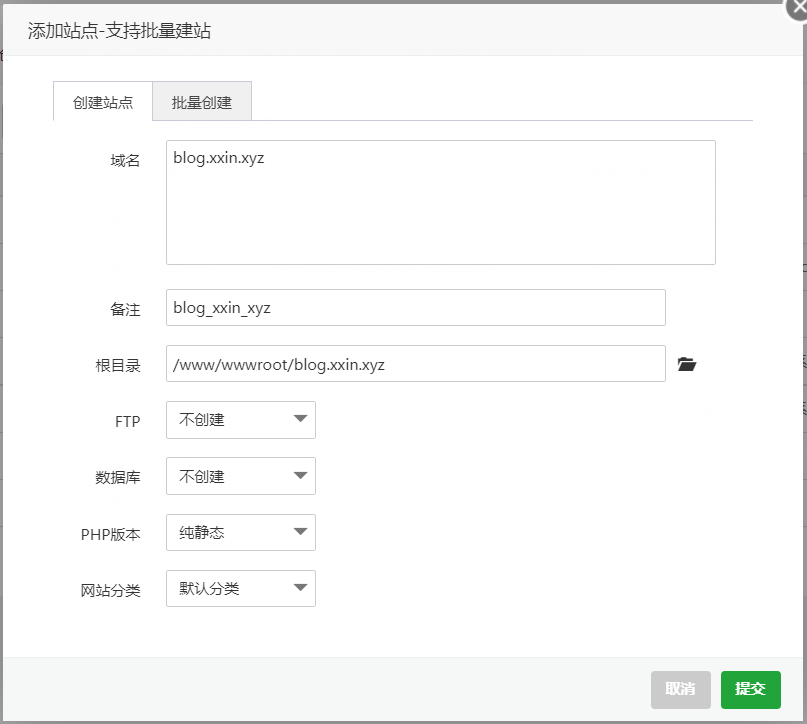
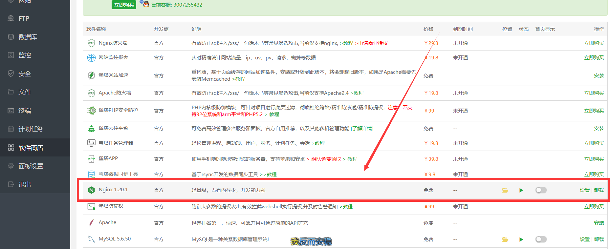

个人服务器搭建hexo(宝塔面板)环境：Linux、CentOS 7.6 64bit、宝塔、nginx优点：相对于github或gitee，速度快，自定义程度高
缺点：自己花钱买域名，自己花钱买服务器，没钱了ovo
一、环境安装
1.站点创建
在宝塔中创建新的站点，该站点即为博客地址

2.nginx配置
从宝塔的软件商店即可快捷安装nginx环境

3.git工具下载
通过ssh连接服务器，并下载安装git工具
1
| yum -y install git #yum安装git
|
相关命令
1
2
| git --version #查看git安装版本
yum remove git #卸载git工具
|
二、git仓库搭建
和之前github的仓库一样，服务器也需要创建一个仓库用来实现静态文件储存
1.创建用户
在服务器端创建一个新用户git
1
2
3
4
5
6
7
| adduser git #创建git用户
chmod 740 /etc/sudoers #改变sudoers文件的权限为文件所有者可写
vim /etc/sudoers #读取
i #表示insert，从仅读取切换到编辑(插入)
#在root ALL=(ALL) ALL 下方添加一行git ALL=(ALL) ALL
:wq! #强制保存退出 :q! 强制不保存退出
chmod 400 /etc/sudoers #改变sudoers文件的权限为文件所有者可读
|
2.给git用户添加ssh密钥
建立主机与服务器连接，添连接后不需要密码也能登录服务器，方便我们日后的博客文件上传
1
2
3
4
5
6
7
8
9
10
11
12
13
14
15
16
17
18
19
| #本地打开Git Bash并进入到C:\Users\admin\.ssh目录
ssh-keygen -t rsa -C "blog.xxin.xyz"
# -t 指定密钥类型，默认是 rsa ，可以省略
# -C 用于识别这个密钥的注释，可以输入任何内容
# -f 指定密钥文件存储文件名，默认id\_rsa
#服务器端打开终端命令行
su git #切换到git用户
mkdir -p ~/.ssh #在git用户(/home/git)下创建.ssh文件夹，用于储存ssh密钥文件
touch ~/.ssh/authorized\_keys #创建authorized_keys文件
chmod 600 ~/.ssh/authorized\_keys #为authorized_keys文件赋予文件所有者可读可写的权限
chmod 700 ~/.ssh #为.ssh文件夹赋予文件夹所有者可读可写可执行的权限
#复制C:\Users\admin\.ssh目录下，公匙id_rsa.pub内容到服务器/home/git/.ssh/authorized_keys，关闭终端
#使用ssh git@server重新登录服务器，测试是否能不要密码登录到git用户
|
3.创建git仓库
1
2
3
| sudo mkdir /home/git/repos #在git用户目录下创建repos文件夹作为仓库位置
cd /home/git/repos
sudo git init --bare blog.git #初始化一个名叫blog.git的仓库
|
4.配置钩子实现自动部署
找到 /home/git/repos/taiblog.git/hooks/post-update.sample 改名post-update，内容改为
1
2
3
| #!/bin/bash
git --work-tree=/www/wwwroot/blog.xxin.xyz --git-dir=/home/git/repos/blog.git checkout -f
↑博客静态文件储存的位置 ↑仓库位置
|
然后给权限
1
2
3
4
| cd blog.git/hooks/
sudo chmod +x post-update #赋予其可执行权限
sudo chown -R git:git /home/git/repos/ #仓库所有者改为git
sudo chown -R git:git /www/wwwroot/blog.xxin.xyz/ #站点文件夹所有者改为git
|
5.测试可用性
1
2
| #在主机端，如果能将仓库拉下来，说明Git仓库搭建成功
git clone git@server\_ip:/home/git/repos/blog.git
|
三、修改本地配置
1.本地config.yml配置
本地Hexo博客文件夹中的_config.yml文件尾部
1
2
3
4
| deploy:
type: git
repo: git@159.75.7.25:/home/git/repos/blog.git #仓库地址
branch: master
|
2.测试
1
2
3
| hexo clean #清除缓存
hexo generate #生成静态页面
hexo delopy #将本地静态页面目录部署到云服务器
|
也可以在package.json 中添加 npm 脚本，这样就可以直接npm run dd一下执行
1
2
3
4
5
6
7
8
| "scripts": {
"build": "hexo generate",
"clean": "hexo clean",
"deploy": "hexo deploy",
"dd": "hexo clean && hexo g -d",
"server": "hexo server",
"ss": "hexo clean && hexo g && hexo s"
},
|
3.访问测试
https://blog.xxin.xyz
参考文章https://cloud.tencent.com/developer/article/1823096